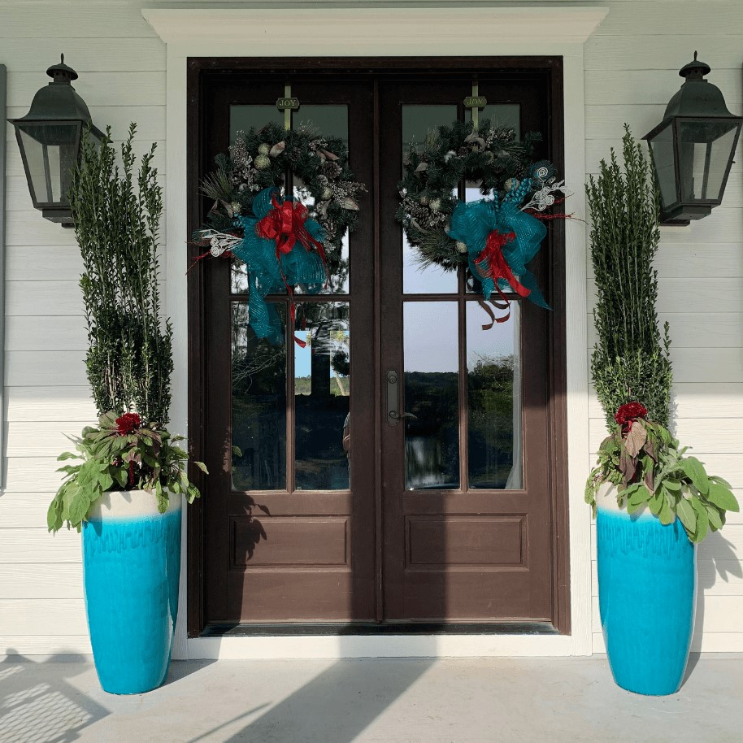

<!-- section 1 -->
    <section id="home">
      <div class="projects-grid">
        
        <!-- Project 1 -->
        <div class="project-card">
          
          <a href="https://cameronrylands.github.io/SC-Gardening-Website/" target="_blank" class="external-link">
            SC Gardening Website
          </a>
        </div>

        <!-- Project 2 -->
        <div class="project-card">
          <!-- Tip: Replace with your actual Todo project cover image path later -->
           
          <a href="https://cameronrylands.github.io/Todo/" target="_blank" class="external-link">
            Todo App
          </a>
        </div>

        <!-- PASTING A NEW PROJECT IS AS EASY AS THIS: -->
        <!-- 
        <div class="project-card">
          
          <a href="https://your-link.com" target="_blank" class="external-link">
            Project Name
          </a>
        </div> 
        -->

      </div>
    </section>
